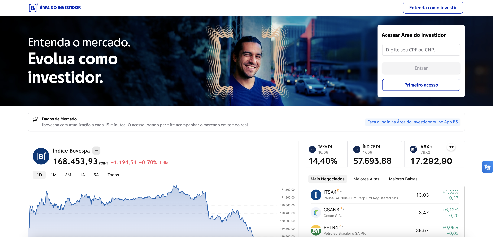

levva · B3
Abril de 2026 – Presente · Posição atual
O Produto · Em andamento
Os canais digitais da B3 para a pessoa física estavam espalhados em múltiplos endereços, sem uma jornada coesa entre eles. O investidor chegava, não encontrava o que precisava, e saía. O Hub PF é a nova porta de entrada unificada — um ponto central onde a pessoa física encontra, navega e acessa os produtos e serviços da B3.
O problema

Estratégia · Releases
O projeto foi quebrado em releases para viabilizar a entrega em um ambiente de alta complexidade regulatória e com múltiplos stakeholders. Cada release tem escopo definido, alinhamento com diretores e superintendentes, e entra em produção de forma independente.
Release 1 — Nova Home
Página inicial do Hub PF no ar em investidor.b3.com.br. Estrutura visual unificada, navegabilidade melhorada e base para as próximas jornadas.
Release 2 — Jornada de Investimentos
Experiência educacional e acessível para o investidor pessoa física encontrar e entender os produtos de investimento da B3. Foco em clareza, descoberta e acessibilidade.
Release 3 — Novos perfis
Expansão do modelo Hub para outros perfis e personas — novos jobs to be done mapeados e experiências dedicadas a cada tipo de investidor.
Contexto · Consultoria na B3
Atuar na B3 como consultora pela levva significa navegar um ambiente onde toda decisão passa por rodadas de aprovação com diretores e superintendentes, o compliance é inegociável e os sistemas legados têm alta criticidade. A velocidade de execução é equilibrada com rigor de governança.
🔍 Discovery & definição
Mapeamento de jornadas, definição de escopo e priorização de cada release
🤝 Stakeholders complexos
Alinhamento com diretores e superintendentes em ciclos de aprovação estruturados
⚖️ Governança & agilidade
Equilibrar velocidade de entrega com compliance e rigor de um ambiente financeiro regulado
O modelo levva
A levva posiciona especialistas como consultores integrados ao cliente — integrados ao time do cliente, com autonomia de PM, mas com a perspectiva externa de quem já navegou contextos diferentes. Esse modelo exige adaptção rápida e comunicação precisa em ambientes que não foram desenhados para velocidade.
Resultados iniciais · Release 1
Com a nova home no ar, os primeiros dados já mostram uma mudança clara de comportamento em relação à página anterior.
📜 Scroll depth
Usuários estão scrollando significativamente mais do que na página antiga
🖱️ Interação com componentes
Engajamento distribuído por toda a página — antes concentrado apenas no hero
🏗️ Em construção
Release 2 em desenvolvimento — resultados consolidados ao final do projeto